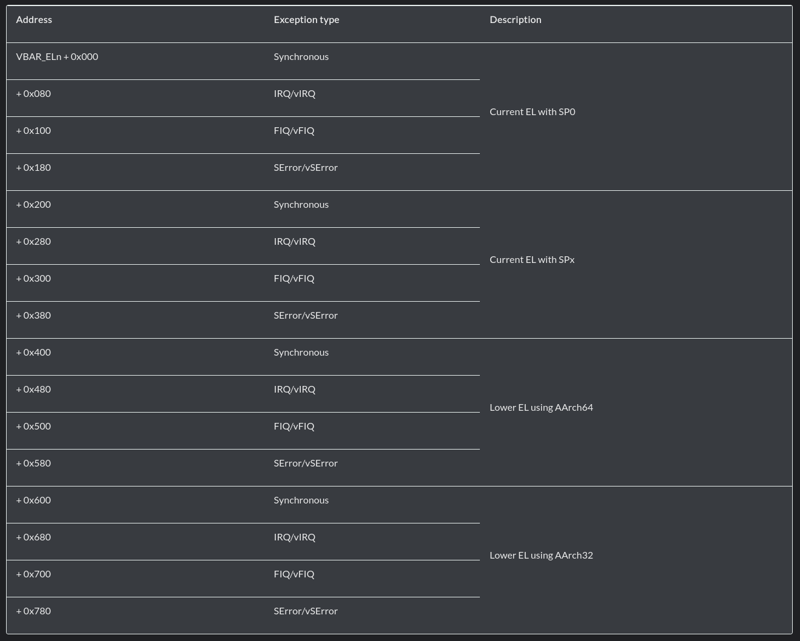

ARM64¶
Documentation for the ARM64 architecture.
Vector Tables in ARM64¶
A lot of this documentation can also be found in the ARM SMC calling convention documentation
Vector Exception Levels¶
In ARM64 each there is a Vector table for each Exception level, except for EL0. So, in practice there is a Vector table for:
EL3
Secure Monitor Call (SMC)EL2
Hyper Visor Call (HVC)EL1
Super Visor Call (SVC)
Documentation about this can be found in the ARM documentation
This vector table can be allocated and filled for each of the vector tables described above.
Setting the Vector Base Address¶
To set the location of this vector table a call MSR call can be done to VBAR_ELX which will write an address to that register. When an execption call is executed, this address is fetched and execution will move to that page, with the corresponding Execption Level(EL)
ARM SMC Calling Convention¶
When doing an SMC call in arm64 a synchronous exception is generated that is handled by the secure monitor in EL3. The SMC call can be in both 32 and 64 bit mode, depending on various bits in the instruction. For most phones this will be in 64 bit mode.
When doing a SMC call, the register ELR_ELn is updated to show the location of where the call came from.
This is the address after the call where the exception came from. When doing an ERET instruction this value is written to the PC.
Stack Pointers¶
Each Exception Level has its own stack pointers. The registers for these are:
SP_EL0
SP_EL1
SP_EL2
SP_EL3
SP_EL3 is innacessible in EL3, to read it you need to read the SP.
Debugger VBAR Implementation¶
Caution
Docs are incomplete!
The debugger uses a SMC call to insert a breakpoint at any address. When a SMC call is thrown the processor jumps to the address pointed to in the VBAR_EL3 register.
This register has to point to the debugger.
The debugger will first store all the registers in the storage location, overwrite the stack pointer and send the hello message b'GiAs' to the host.
An overview of what is happening when a SMC call is dan can be seen below:

Warning
Currently register X15 gets corrupted when an SMC call is handled.
Memory Managment Unit on ARM64¶
This part describes the memory managment unit on ARM64 and how it is used by the debugger.
Single Level Pagetable at EL3¶
The documentation described here can also be found at the official ARM documentation.
Translation Regime¶
Register TCR_ELx is used to control the Tranlation Regime for the pagetables. The documentation for the TCR_EL3 can be found in the official ARM documentation.
Translation Table¶
The location of the page table is located in register ttbr0_el3. Depending of the configuration of TCR_EL3 the bits for address selection can change.
More documentation can be found here
Pagetable Entry¶
The following diagram shows the format of a stage 1 level 1 table entry on EL3.

Automatic Paging¶
Automatic paging for page walking will be setup in the debugger.
For this the ARM64_Concrete_State contains a mmu with class ARM64_MMU.
System Configuration¶
Configuration for the processor can be set in the System Control Register for different exception levels. These registers are:
SCTLR_EL3
SCTLR_EL2
SCTLR_EL1
More information about the configuration settings can be found in the ARM documentation
Debugger Storage Overview on ARM64¶
Overview of the storage setup on ARM64 for the debugger. To interact with this storage dump you can either dump the storage location and parse the entries or use the utils/debugger/debugger_archs/arm64_processor_state.py processor state, which is also passed as an argument in GA_arm64_debugger.
Note
All addresses below asume STORAGE_LOCATION + Address
Address |
Function |
Comment |
|---|---|---|
0x0 |
X0 |
Stores Register X0 |
0x8 |
X1 |
Stores Register X1 |
0x10 |
X2 |
Stores Register X2 |
0x18 |
X3 |
Stores Register X3 |
0x20 |
X4 |
Stores Register X4 |
0x28 |
X5 |
Stores Register X5 |
0x30 |
X6 |
Stores Register X6 |
0x38 |
X7 |
Stores Register X7 |
0x40 |
X8 |
Stores Register X8 |
0x48 |
X9 |
Stores Register X9 |
0x50 |
X10 |
Stores Register X10 |
0x58 |
X11 |
Stores Register X11 |
0x60 |
X12 |
Stores Register X12 |
0x68 |
X13 |
Stores Register X13 |
0x70 |
X14 |
Stores Register X14 |
0x78 |
X15 |
Stores Register X15 |
0x80 |
X16 |
Stores Register X16 |
0x88 |
X17 |
Stores Register X17 |
0x90 |
X18 |
Stores Register X18 |
0x98 |
X19 |
Stores Register X19 |
0xa0 |
X20 |
Stores Register X20 |
0xa8 |
X21 |
Stores Register X21 |
0xb0 |
X22 |
Stores Register X22 |
0xb8 |
X23 |
Stores Register X23 |
0xc0 |
X24 |
Stores Register X24 |
0xc8 |
X25 |
Stores Register X25 |
0xd0 |
X26 |
Stores Register X26 |
0xd8 |
X27 |
Stores Register X27 |
0xe0 |
X28 |
Stores Register X28 |
0xe8 |
X29 |
Stores the |
0xf0 |
X30 |
Stores the |
0xf8 |
SP |
Stores the |
0x100 |
TTBR0_EL3 |
Stores |
0x108 |
TTBR0_EL2 |
|
0x110 |
TTBR0_EL1 |
|
0x118 |
SCTLR_EL3 |
|
0x120 |
SCTLR_EL2 |
|
0x128 |
SCTLR_EL1 |
|
0x130 |
VBAR_EL3 |
|
0x130 |
VBAR_EL2 |
|
0x140 |
VBAR_EL1 |
|
0x148 |
TCR_EL3 |
|
0x150 |
TCR_EL2 |
|
0x158 |
TCR_EL1 |
|
0x160 |
ELR_EL3 |
|
0x168 |
ELR_EL2 |
|
0x170 |
ELR_EL1 |
|
0x178 |
SP_EL2 |
|
0x180 |
SP_EL1 |
|
0x188 |
SP_EL0 |
|
0x190 |
SPSR_EL3 |
|
0x198 |
SPSR_EL2 |
|
0x1a0 |
SPSR_EL1 |
|
0x1a8 |
MAIR_EL3 |
|
0x1b0 |
MAIR_EL2 |
|
0x1b8 |
MAIR_EL1 |
|
0x1c0 |
CurrentEL |
|
0x1c8 |
NZCV |
Store processor condition flags |
0xfc0 |
DBG_SETUP_JUMP |
|
0xfc8 |
DBG_SETUP_JUMP_ADDRESS |
|
0xfd0 |
DBG_MMU_DISABLE |
DISABLED |
0xfd8 |
DBG_JUMP_TO |
|
0xfe0 |
DBG_CONT_EXEC |
|
0xfe8 |
TEMP X0 |
|
0xff0 |
Store X0 |
|
0xff8 |
JUMP_ADDR |
|
Note
This memory segment is still being updated to add registers
When DBG_CONT_EXEC is set to 0x777 the debugger will not enter the debugger_main address, but instead restore the original processor state and jump into DBG_JUMP_TO. This allows the debugger to be run without user interaction.